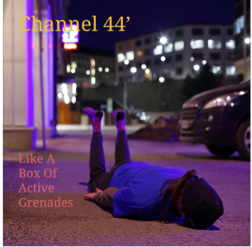

Challenge: Design a Band
Challenge Information
Write in your own information about the challenge. Ideas to include:
- ---What is design thinking? Why are we studying it?
- ---What are the steps of the DEEP design thinking process?
- ---Summarize the steps that we did in class to make the album cover.
Album Cover
Band Biography
Channel 44' comes from two kids living in North Carolina trying to express their love to modern music of indie with a mix of electronic. Members, John Hivey and Shirley Mohanne, met after spending classes together in Pepperdine University, where they took courses of psychology and telecommunication. The name, "Channel 44," comes from the years spent from Hivey being an intern on an news channel in Asheville called Channel 44, which internship was very difficult to him. They first boomed in small club-scenes in LA, where spread their music through blogs and websites, which landed them associated with other group member, Jayson Gretzky, where he was known for producing and his instrumental use of music, respectively. When they were landed their first album with Mad Decent, they sought out music that will speak about the troubles of life and to show awareness of social problems around the world. These range from war violence to poverty in nations. To hear their newest track, check out the following link: Crossfire.